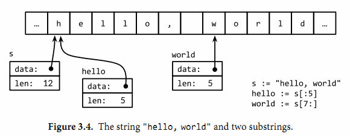
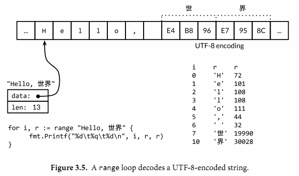

3.5. 字符串
一个字符串是一个不可改变的字节序列。字符串可以包含任意的数据，包括byte值0，但是通常是用来包含人类可读的文本。文本字符串通常被解释为采用UTF8编码的Unicode码点（rune）序列，我们稍后会详细讨论这个问题。
内置的len函数可以返回一个字符串中的字节数目（不是rune字符数目），索引操作s[i]返回第i个字节的字节值，i必须满足0 ≤ i< len(s)条件约束。
s := "hello, world"
fmt.Println(len(s)) // "12"
fmt.Println(s[0], s[7]) // "104 119" ('h' and 'w')
如果试图访问超出字符串索引范围的字节将会导致panic异常：
c := s[len(s)] // panic: index out of range
第i个字节并不一定是字符串的第i个字符，因为对于非ASCII字符的UTF8编码会要两个或多个字节。我们先简单说下字符的工作方式。
子字符串操作s[i:j]基于原始的s字符串的第i个字节开始到第j个字节（并不包含j本身）生成一个新字符串。生成的新字符串将包含j-i个字节。
fmt.Println(s[0:5]) // "hello"
同样，如果索引超出字符串范围或者j小于i的话将导致panic异常。
不管i还是j都可能被忽略，当它们被忽略时将采用0作为开始位置，采用len(s)作为结束的位置。
fmt.Println(s[:5]) // "hello"
fmt.Println(s[7:]) // "world"
fmt.Println(s[:]) // "hello, world"
其中+操作符将两个字符串连接构造一个新字符串：
fmt.Println("goodbye" + s[5:]) // "goodbye, world"
字符串可以用==和<进行比较；比较通过逐个字节比较完成的，因此比较的结果是字符串自然编码的顺序。
字符串的值是不可变的：一个字符串包含的字节序列永远不会被改变，当然我们也可以给一个字符串变量分配一个新字符串值。可以像下面这样将一个字符串追加到另一个字符串：
s := "left foot"
t := s
s += ", right foot"
这并不会导致原始的字符串值被改变，但是变量s将因为+=语句持有一个新的字符串值，但是t依然是包含原先的字符串值。
fmt.Println(s) // "left foot, right foot"
fmt.Println(t) // "left foot"
因为字符串是不可修改的，因此尝试修改字符串内部数据的操作也是被禁止的：
s[0] = 'L' // compile error: cannot assign to s[0]
不变性意味着如果两个字符串共享相同的底层数据的话也是安全的，这使得复制任何长度的字符串代价是低廉的。同样，一个字符串s和对应的子字符串切片s[7:]的操作也可以安全地共享相同的内存，因此字符串切片操作代价也是低廉的。在这两种情况下都没有必要分配新的内存。 图3.4演示了一个字符串和两个子串共享相同的底层数据。
3.5.1. 字符串面值
字符串值也可以用字符串面值方式编写，只要将一系列字节序列包含在双引号内即可：
"Hello, world"

因为Go语言源文件总是用UTF8编码，并且Go语言的文本字符串也以UTF8编码的方式处理，因此我们可以将Unicode码点也写到字符串面值中。
在一个双引号包含的字符串面值中，可以用以反斜杠\开头的转义序列插入任意的数据。下面的换行、回车和制表符等是常见的ASCII控制代码的转义方式：
\a 响铃
\b 退格
\f 换页
\n 换行
\r 回车
\t 制表符
\v 垂直制表符
\' 单引号（只用在 '\'' 形式的rune符号面值中）
\" 双引号（只用在 "..." 形式的字符串面值中）
\\ 反斜杠
可以通过十六进制或八进制转义在字符串面值中包含任意的字节。一个十六进制的转义形式是\xhh，其中两个h表示十六进制数字（大写或小写都可以）。一个八进制转义形式是\ooo，包含三个八进制的o数字（0到7），但是不能超过\377（译注：对应一个字节的范围，十进制为255）。每一个单一的字节表达一个特定的值。稍后我们将看到如何将一个Unicode码点写到字符串面值中。
一个原生的字符串面值形式是`…`，使用反引号代替双引号。在原生的字符串面值中，没有转义操作；全部的内容都是字面的意思，包含退格和换行，因此一个程序中的原生字符串面值可能跨越多行（译注：在原生字符串面值内部是无法直接写`字符的，可以用八进制或十六进制转义或+“`“连接字符串常量完成）。唯一的特殊处理是会删除回车以保证在所有平台上的值都是一样的，包括那些把回车也放入文本文件的系统（译注：Windows系统会把回车和换行一起放入文本文件中）。
原生字符串面值用于编写正则表达式会很方便，因为正则表达式往往会包含很多反斜杠。原生字符串面值同时被广泛应用于HTML模板、JSON面值、命令行提示信息以及那些需要扩展到多行的场景。
const GoUsage = `Go is a tool for managing Go source code.
Usage:
go command [arguments]
...`
3.5.2. Unicode
在很久以前，世界还是比较简单的，起码计算机世界就只有一个ASCII字符集：美国信息交换标准代码。ASCII，更准确地说是美国的ASCII，使用7bit来表示128个字符：包含英文字母的大小写、数字、各种标点符号和设备控制符。对于早期的计算机程序来说，这些就足够了，但是这也导致了世界上很多其他地区的用户无法直接使用自己的符号系统。随着互联网的发展，混合多种语言的数据变得很常见（译注：比如本身的英文原文或中文翻译都包含了ASCII、中文、日文等多种语言字符）。如何有效处理这些包含了各种语言的丰富多样的文本数据呢？
答案就是使用Unicode（ http://unicode.org ），它收集了这个世界上所有的符号系统，包括重音符号和其它变音符号，制表符和回车符，还有很多神秘的符号，每个符号都分配一个唯一的Unicode码点，Unicode码点对应Go语言中的rune整数类型（译注：rune是int32等价类型）。
在第八版本的Unicode标准里收集了超过120,000个字符，涵盖超过100多种语言。这些在计算机程序和数据中是如何体现的呢？通用的表示一个Unicode码点的数据类型是int32，也就是Go语言中rune对应的类型；它的同义词rune符文正是这个意思。
我们可以将一个符文序列表示为一个int32序列。这种编码方式叫UTF-32或UCS-4，每个Unicode码点都使用同样大小的32bit来表示。这种方式比较简单统一，但是它会浪费很多存储空间，因为大多数计算机可读的文本是ASCII字符，本来每个ASCII字符只需要8bit或1字节就能表示。而且即使是常用的字符也远少于65,536个，也就是说用16bit编码方式就能表达常用字符。但是，还有其它更好的编码方法吗？
3.5.3. UTF-8
UTF8是一个将Unicode码点编码为字节序列的变长编码。UTF8编码是由Go语言之父Ken Thompson和Rob Pike共同发明的，现在已经是Unicode的标准。UTF8编码使用1到4个字节来表示每个Unicode码点，ASCII部分字符只使用1个字节，常用字符部分使用2或3个字节表示。每个符号编码后第一个字节的高端bit位用于表示编码总共有多少个字节。如果第一个字节的高端bit为0，则表示对应7bit的ASCII字符，ASCII字符每个字符依然是一个字节，和传统的ASCII编码兼容。如果第一个字节的高端bit是110，则说明需要2个字节；后续的每个高端bit都以10开头。更大的Unicode码点也是采用类似的策略处理。
0xxxxxxx runes 0-127 (ASCII)
110xxxxx 10xxxxxx 128-2047 (values <128 unused)
1110xxxx 10xxxxxx 10xxxxxx 2048-65535 (values <2048 unused)
11110xxx 10xxxxxx 10xxxxxx 10xxxxxx 65536-0x10ffff (other values unused)
变长的编码无法直接通过索引来访问第n个字符，但是UTF8编码获得了很多额外的优点。首先UTF8编码比较紧凑，完全兼容ASCII码，并且可以自动同步：它可以通过向前回朔最多3个字节就能确定当前字符编码的开始字节的位置。它也是一个前缀编码，所以当从左向右解码时不会有任何歧义也并不需要向前查看（译注：像GBK之类的编码，如果不知道起点位置则可能会出现歧义）。没有任何字符的编码是其它字符编码的子串，或是其它编码序列的字串，因此搜索一个字符时只要搜索它的字节编码序列即可，不用担心前后的上下文会对搜索结果产生干扰。同时UTF8编码的顺序和Unicode码点的顺序一致，因此可以直接排序UTF8编码序列。同时因为没有嵌入的NUL(0)字节，可以很好地兼容那些使用NUL作为字符串结尾的编程语言。
Go语言的源文件采用UTF8编码，并且Go语言处理UTF8编码的文本也很出色。unicode包提供了诸多处理rune字符相关功能的函数（比如区分字母和数字，或者是字母的大写和小写转换等），unicode/utf8包则提供了用于rune字符序列的UTF8编码和解码的功能。
有很多Unicode字符很难直接从键盘输入，并且还有很多字符有着相似的结构；有一些甚至是不可见的字符（译注：中文和日文就有很多相似但不同的字）。Go语言字符串面值中的Unicode转义字符让我们可以通过Unicode码点输入特殊的字符。有两种形式：\uhhhh对应16bit的码点值，\Uhhhhhhhh对应32bit的码点值，其中h是一个十六进制数字；一般很少需要使用32bit的形式。每一个对应码点的UTF8编码。例如：下面的字母串面值都表示相同的值：
"世界"
"\xe4\xb8\x96\xe7\x95\x8c"
"\u4e16\u754c"
"\U00004e16\U0000754c"
上面三个转义序列都为第一个字符串提供替代写法，但是它们的值都是相同的。
Unicode转义也可以使用在rune字符中。下面三个字符是等价的：
'世' '\u4e16' '\U00004e16'
对于小于256的码点值可以写在一个十六进制转义字节中，例如\x41对应字符’A’，但是对于更大的码点则必须使用\u或\U转义形式。因此，\xe4\xb8\x96并不是一个合法的rune字符，虽然这三个字节对应一个有效的UTF8编码的码点。
得益于UTF8编码优良的设计，诸多字符串操作都不需要解码操作。我们可以不用解码直接测试一个字符串是否是另一个字符串的前缀：
func HasPrefix(s, prefix string) bool {
return len(s) >= len(prefix) && s[:len(prefix)] == prefix
}
或者是后缀测试：
func HasSuffix(s, suffix string) bool {
return len(s) >= len(suffix) && s[len(s)-len(suffix):] == suffix
}
或者是包含子串测试：
func Contains(s, substr string) bool {
for i := 0; i < len(s); i++ {
if HasPrefix(s[i:], substr) {
return true
}
}
return false
}
对于UTF8编码后文本的处理和原始的字节处理逻辑是一样的。但是对应很多其它编码则并不是这样的。（上面的函数都来自strings字符串处理包，真实的代码包含了一个用哈希技术优化的Contains 实现。）
另一方面，如果我们真的关心每个Unicode字符，我们可以使用其它处理方式。考虑前面的第一个例子中的字符串，它混合了中西两种字符。图3.5展示了它的内存表示形式。字符串包含13个字节，以UTF8形式编码，但是只对应9个Unicode字符：
import "unicode/utf8"
s := "Hello, 世界"
fmt.Println(len(s)) // "13"
fmt.Println(utf8.RuneCountInString(s)) // "9"
为了处理这些真实的字符，我们需要一个UTF8解码器。unicode/utf8包提供了该功能，我们可以这样使用：
for i := 0; i < len(s); {
r, size := utf8.DecodeRuneInString(s[i:])
fmt.Printf("%d\t%c\n", i, r)
i += size
}
每一次调用DecodeRuneInString函数都返回一个r和长度，r对应字符本身，长度对应r采用UTF8编码后的编码字节数目。长度可以用于更新第i个字符在字符串中的字节索引位置。但是这种编码方式是笨拙的，我们需要更简洁的语法。幸运的是，Go语言的range循环在处理字符串的时候，会自动隐式解码UTF8字符串。下面的循环运行如图3.5所示；需要注意的是对于非ASCII，索引更新的步长将超过1个字节。

for i, r := range "Hello, 世界" {
fmt.Printf("%d\t%q\t%d\n", i, r, r)
}
我们可以使用一个简单的循环来统计字符串中字符的数目，像这样：
n := 0
for _, _ = range s {
n++
}
像其它形式的循环那样，我们也可以忽略不需要的变量：
n := 0
for range s {
n++
}
或者我们可以直接调用utf8.RuneCountInString(s)函数。
正如我们前面提到的，文本字符串采用UTF8编码只是一种惯例，但是对于循环的真正字符串并不是一个惯例，这是正确的。如果用于循环的字符串只是一个普通的二进制数据，或者是含有错误编码的UTF8数据，将会发生什么呢？
每一个UTF8字符解码，不管是显式地调用utf8.DecodeRuneInString解码或是在range循环中隐式地解码，如果遇到一个错误的UTF8编码输入，将生成一个特别的Unicode字符\uFFFD，在印刷中这个符号通常是一个黑色六角或钻石形状，里面包含一个白色的问号“?“。当程序遇到这样的一个字符，通常是一个危险信号，说明输入并不是一个完美没有错误的UTF8字符串。
UTF8字符串作为交换格式是非常方便的，但是在程序内部采用rune序列可能更方便，因为rune大小一致，支持数组索引和方便切割。
将[]rune类型转换应用到UTF8编码的字符串，将返回字符串编码的Unicode码点序列：
// "program" in Japanese katakana
s := "プログラム"
fmt.Printf("% x\n", s) // "e3 83 97 e3 83 ad e3 82 b0 e3 83 a9 e3 83 a0"
r := []rune(s)
fmt.Printf("%x\n", r) // "[30d7 30ed 30b0 30e9 30e0]"
（在第一个Printf中的% x参数用于在每个十六进制数字前插入一个空格。）
如果是将一个[]rune类型的Unicode字符slice或数组转为string，则对它们进行UTF8编码：
fmt.Println(string(r)) // "プログラム"
将一个整数转型为字符串意思是生成以只包含对应Unicode码点字符的UTF8字符串：
fmt.Println(string(65)) // "A", not "65"
fmt.Println(string(0x4eac)) // "京"
如果对应码点的字符是无效的，则用\uFFFD无效字符作为替换：
fmt.Println(string(1234567)) // "?"
3.5.4. 字符串和Byte切片
标准库中有四个包对字符串处理尤为重要：bytes、strings、strconv和unicode包。strings包提供了许多如字符串的查询、替换、比较、截断、拆分和合并等功能。
bytes包也提供了很多类似功能的函数，但是针对和字符串有着相同结构的[]byte类型。因为字符串是只读的，因此逐步构建字符串会导致很多分配和复制。在这种情况下，使用bytes.Buffer类型将会更有效，稍后我们将展示。
strconv包提供了布尔型、整型数、浮点数和对应字符串的相互转换，还提供了双引号转义相关的转换。
unicode包提供了IsDigit、IsLetter、IsUpper和IsLower等类似功能，它们用于给字符分类。每个函数有一个单一的rune类型的参数，然后返回一个布尔值。而像ToUpper和ToLower之类的转换函数将用于rune字符的大小写转换。所有的这些函数都是遵循Unicode标准定义的字母、数字等分类规范。strings包也有类似的函数，它们是ToUpper和ToLower，将原始字符串的每个字符都做相应的转换，然后返回新的字符串。
下面例子的basename函数灵感源于Unix shell的同名工具。在我们实现的版本中，basename(s)将看起来像是系统路径的前缀删除，同时将看似文件类型的后缀名部分删除：
fmt.Println(basename("a/b/c.go")) // "c"
fmt.Println(basename("c.d.go")) // "c.d"
fmt.Println(basename("abc")) // "abc"
第一个版本并没有使用任何库，全部手工硬编码实现：
gopl.io/ch3/basename1
// basename removes directory components and a .suffix.
// e.g., a => a, a.go => a, a/b/c.go => c, a/b.c.go => b.c
func basename(s string) string {
// Discard last '/' and everything before.
for i := len(s) - 1; i >= 0; i-- {
if s[i] == '/' {
s = s[i+1:]
break
}
}
// Preserve everything before last '.'.
for i := len(s) - 1; i >= 0; i-- {
if s[i] == '.' {
s = s[:i]
break
}
}
return s
}
这个简化版本使用了strings.LastIndex库函数：
gopl.io/ch3/basename2
func basename(s string) string {
slash := strings.LastIndex(s, "/") // -1 if "/" not found
s = s[slash+1:]
if dot := strings.LastIndex(s, "."); dot >= 0 {
s = s[:dot]
}
return s
}
path和path/filepath包提供了关于文件路径名更一般的函数操作。使用斜杠分隔路径可以在任何操作系统上工作。斜杠本身不应该用于文件名，但是在其他一些领域可能会用于文件名，例如URL路径组件。相比之下，path/filepath包则使用操作系统本身的路径规则，例如POSIX系统使用/foo/bar，而Microsoft Windows使用c:\foo\bar等。
让我们继续另一个字符串的例子。函数的功能是将一个表示整数值的字符串，每隔三个字符插入一个逗号分隔符，例如“12345”处理后成为“12,345”。这个版本只适用于整数类型；支持浮点数类型的留作练习。
gopl.io/ch3/comma
// comma inserts commas in a non-negative decimal integer string.
func comma(s string) string {
n := len(s)
if n <= 3 {
return s
}
return comma(s[:n-3]) + "," + s[n-3:]
}
输入comma函数的参数是一个字符串。如果输入字符串的长度小于或等于3的话，则不需要插入逗号分隔符。否则，comma函数将在最后三个字符前的位置将字符串切割为两个子串并插入逗号分隔符，然后通过递归调用自身来得出前面的子串。
一个字符串是包含只读字节的数组，一旦创建，是不可变的。相比之下，一个字节slice的元素则可以自由地修改。
字符串和字节slice之间可以相互转换：
s := "abc"
b := []byte(s)
s2 := string(b)
从概念上讲，一个[]byte(s)转换是分配了一个新的字节数组用于保存字符串数据的拷贝，然后引用这个底层的字节数组。编译器的优化可以避免在一些场景下分配和复制字符串数据，但总的来说需要确保在变量b被修改的情况下，原始的s字符串也不会改变。将一个字节slice转换到字符串的string(b)操作则是构造一个字符串拷贝，以确保s2字符串是只读的。
为了避免转换中不必要的内存分配，bytes包和strings同时提供了许多实用函数。下面是strings包中的六个函数：
func Contains(s, substr string) bool
func Count(s, sep string) int
func Fields(s string) []string
func HasPrefix(s, prefix string) bool
func Index(s, sep string) int
func Join(a []string, sep string) string
bytes包中也对应的六个函数：
func Contains(b, subslice []byte) bool
func Count(s, sep []byte) int
func Fields(s []byte) [][]byte
func HasPrefix(s, prefix []byte) bool
func Index(s, sep []byte) int
func Join(s [][]byte, sep []byte) []byte
它们之间唯一的区别是字符串类型参数被替换成了字节slice类型的参数。
bytes包还提供了Buffer类型用于字节slice的缓存。一个Buffer开始是空的，但是随着string、byte或[]byte等类型数据的写入可以动态增长，一个bytes.Buffer变量并不需要初始化，因为零值也是有效的：
gopl.io/ch3/printints
// intsToString is like fmt.Sprint(values) but adds commas.
func intsToString(values []int) string {
var buf bytes.Buffer
buf.WriteByte('[')
for i, v := range values {
if i > 0 {
buf.WriteString(", ")
}
fmt.Fprintf(&buf, "%d", v)
}
buf.WriteByte(']')
return buf.String()
}
func main() {
fmt.Println(intsToString([]int{1, 2, 3})) // "[1, 2, 3]"
}
当向bytes.Buffer添加任意字符的UTF8编码时，最好使用bytes.Buffer的WriteRune方法，但是WriteByte方法对于写入类似’[‘和’]’等ASCII字符则会更加有效。
bytes.Buffer类型有着很多实用的功能，我们在第七章讨论接口时将会涉及到，我们将看看如何将它用作一个I/O的输入和输出对象，例如当做Fprintf的io.Writer输出对象，或者当作io.Reader类型的输入源对象。
练习 3.10： 编写一个非递归版本的comma函数，使用bytes.Buffer代替字符串链接操作。
练习 3.11： 完善comma函数，以支持浮点数处理和一个可选的正负号的处理。
练习 3.12： 编写一个函数，判断两个字符串是否是相互打乱的，也就是说它们有着相同的字符，但是对应不同的顺序。
3.5.5. 字符串和数字的转换
除了字符串、字符、字节之间的转换，字符串和数值之间的转换也比较常见。由strconv包提供这类转换功能。
将一个整数转为字符串，一种方法是用fmt.Sprintf返回一个格式化的字符串；另一个方法是用strconv.Itoa(“整数到ASCII”)：
x := 123
y := fmt.Sprintf("%d", x)
fmt.Println(y, strconv.Itoa(x)) // "123 123"
FormatInt和FormatUint函数可以用不同的进制来格式化数字：
fmt.Println(strconv.FormatInt(int64(x), 2)) // "1111011"
fmt.Printf函数的%b、%d、%o和%x等参数提供功能往往比strconv包的Format函数方便很多，特别是在需要包含有附加额外信息的时候：
s := fmt.Sprintf("x=%b", x) // "x=1111011"
如果要将一个字符串解析为整数，可以使用strconv包的Atoi或ParseInt函数，还有用于解析无符号整数的ParseUint函数：
x, err := strconv.Atoi("123") // x is an int
y, err := strconv.ParseInt("123", 10, 64) // base 10, up to 64 bits
ParseInt函数的第三个参数是用于指定整型数的大小；例如16表示int16，0则表示int。在任何情况下，返回的结果y总是int64类型，你可以通过强制类型转换将它转为更小的整数类型。
有时候也会使用fmt.Scanf来解析输入的字符串和数字，特别是当字符串和数字混合在一行的时候，它可以灵活处理不完整或不规则的输入。